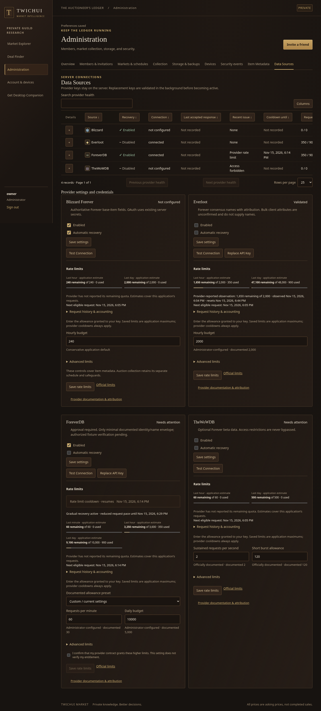
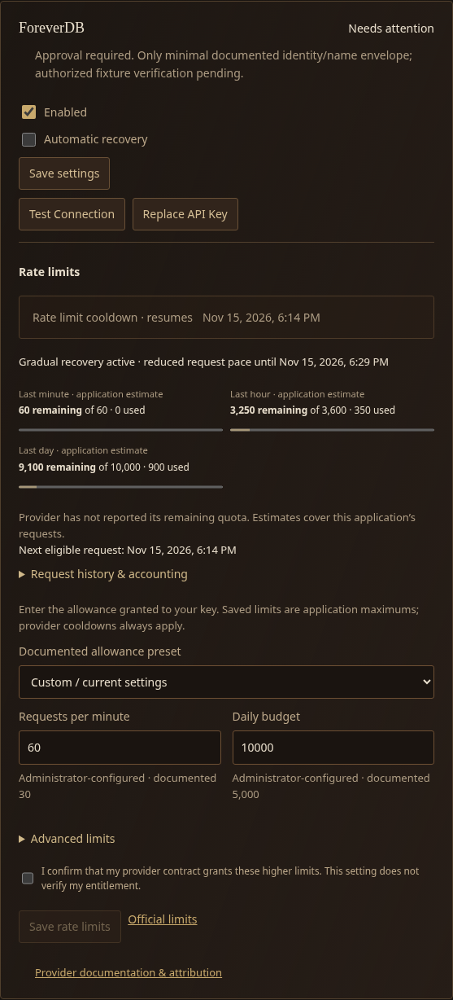
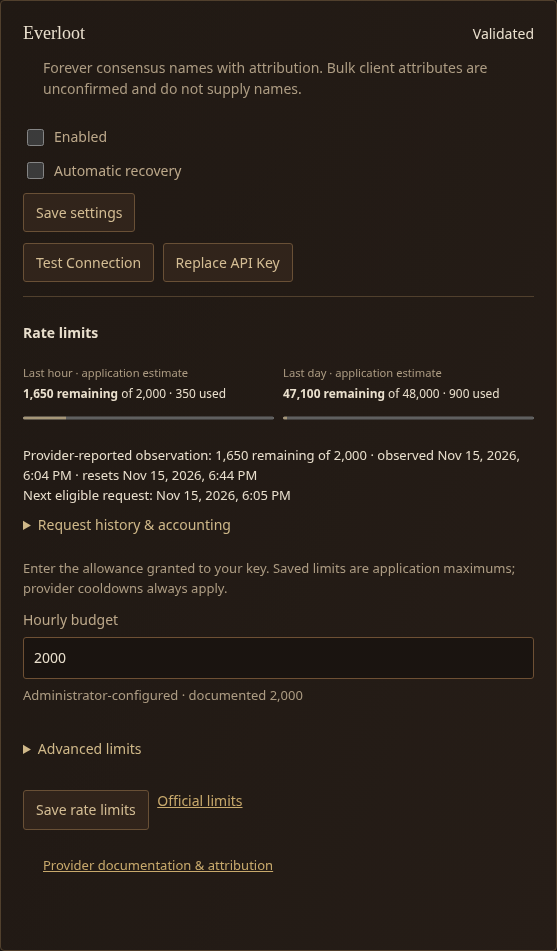
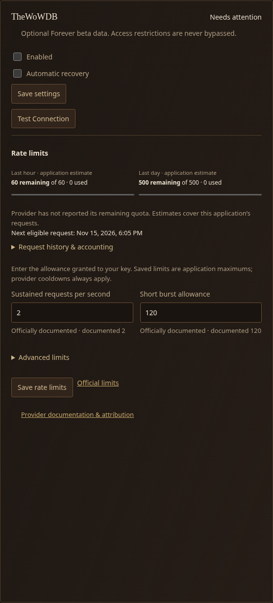
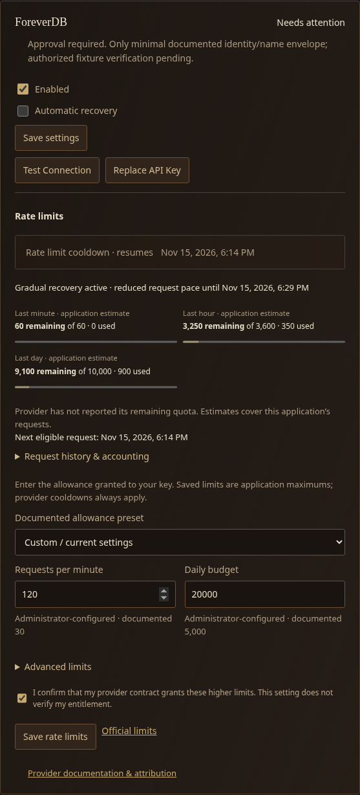
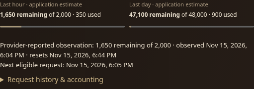
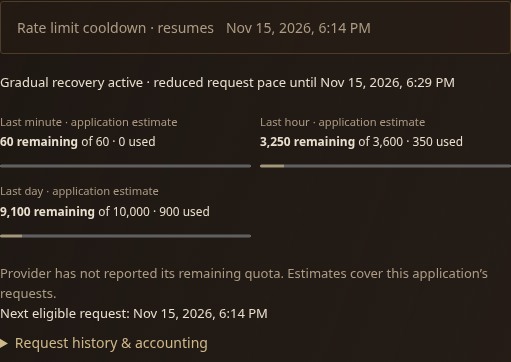
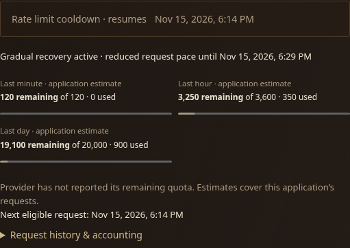
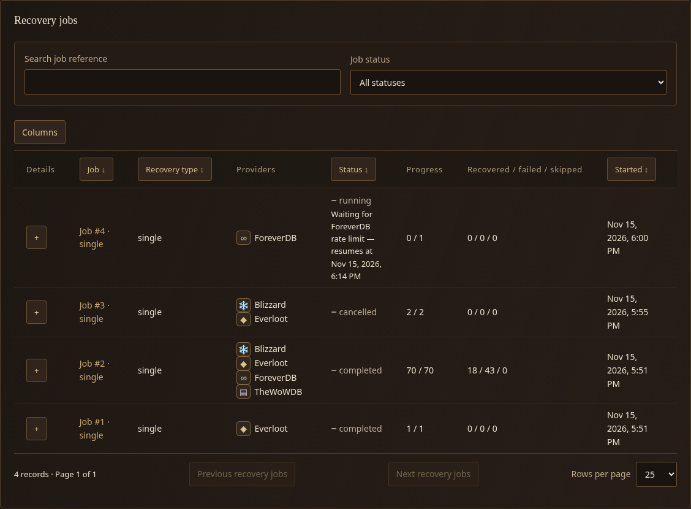
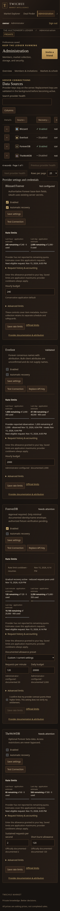

Provider rate management — synthetic reviewProvider rate management
Synthetic review data · zero live provider requests · America/Denver browser timezone
Actual isolated Chromium screenshots. Visual approval and production promotion remain separate owner decisions.
1. Data Sources overview
2. ForeverDB configured limits
3. Everloot configured limits
4. TheWoWDB refill and burst
5. Editing an approved custom allowance
6. Synthetic provider-reported remaining quota
7. Application-estimated remaining quota
8. Persistent HTTP 429 cooldown after saving
9. Recovery job waiting for quota
10. Narrow administration at 390 pixels